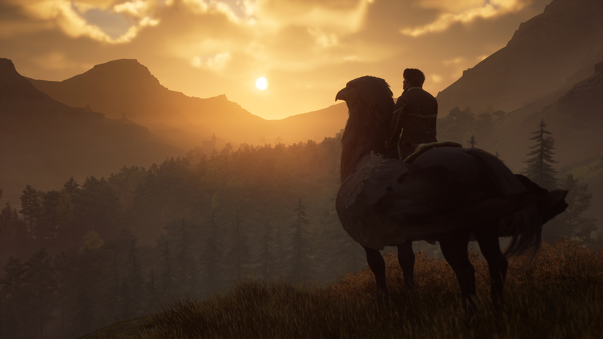
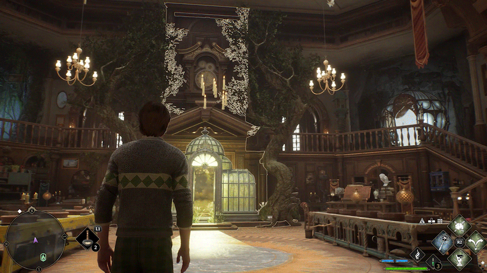

Hogwarts Legacy
What Kind of Player Are You?
By Christine . Feb 2, 2024

we all have a different gaming personality. Some like to complete a game perfectly, with no side-quest left unaccomplished, while some are destined to simply rage-quit everything. But how will you be playing Hogwarts Legacy?
Can we guess your gaming personality? Oh, and this article will contain mild spoilers for the game, as you may imagine.
If you have a lot of stresses in life… you’ll be a duelist

After a long day of mildly annoying things, sometimes you just want to sit down, grab a cup of tea, and …destroy everything. Well, good news! Hogwarts Legacy not only encourages your duelling skills, but also invites you to put them to the ultimate test in Battle Arenas. Although combining spells and using plants and potions strategically is encouraged, we won’t blame you if you just want to button-bash. And there will be plenty of big bosses for you to take out your frustrations on – although we hope you’re not afraid of giant spiders.
If you’re a social butterfly… you’ll be talking to all the characters!

Less studying, more chit-chatting. That’s your motto. And we can hardly blame you. After so many years of dreaming of a game like this, we finally have the opportunity to live like a proper Hogwarts student, with so many classmates and professors dotted around the castle to socialise with. Of course you want to have a natter with everyone! And don’t forget about the portraits, house-elves and ghosts too – or Peeves the Poltergeist, who usually has a little poem for you.
And of course, you can go beyond Hogwarts to make friends too. We particularly like the travelling musician who likes to collect musical instruments – he’s quite the talent of the wizarding world!
If you have a big imagination… you’ll pick the dialogue options completely different to what you’d do in real life
Ooh, the temptation to pick the ‘mean’ options when you’re having a chat with someone in a game… and in Hogwarts Legacy, there are plenty of devilish dialogue choices that channel your inner Draco Malfoy rather than your inner Neville to choose from. So are you going to be nice or a bit nasty?
If you love to travel… you’ll be exploring the Scottish Highlands
The designers of Hogwarts Legacy put a lot of love and care into the scenic Scottish highlands where Hogwarts is set. If all the Hogwarts classes are too much brain-energy for you, never fear. Just hop on your broom and traverse the gorgeous landscapes surrounding the castle. You’ll fly by many beautiful scenes, such as lakes, forestry and 1800s-style hamlets. And as the seasons change with your gaming experience, you’ll get to explore the environments in all sorts of different weathers. We’ve all low-key dreamed of hanging out in a snowy Hogwarts, surely.
If you’re a wholesome sort… you’ll be a cosy gamer in the Room of Requirement
You probably grew up playing simulator-style games, where you get to generally potter (yep, we said it) about, tending to your gentle, daily tasks. Although Hogwarts Legacy has a big, epic storyline running through it – you also get the joy of simply getting to chill at Hogwarts. The Room of Requirement, in particular, is a space where you can just tinker, decorate, and build items. And then you have the Vivarium, which lets you look after cute magical creatures and create your own beautiful outdoor space. Who needs a storyline when you can just vibe?